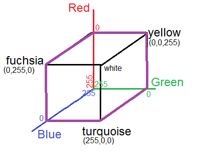

EENG 383
Lab 5 - Color Cube| Lab: | 5 |
| Status: | Live |
InLab 5
Some self guided activities.Lab 5 assignment
Build firmware to smoothly and continuously change the colors on the LEDs according to the 6-color tour shown below.
Software
Write an ISR to generate a color tour. A color tour is a gradual change in color along the purple edges in the image above. Each edge traverse should take about 0.25 seconds, meaning the entire color tour should take about 1.5 seconds. Each point on the color tour has a red, green and blue (RGB) component which, when mixed together, determines the color of the LED. A particular combination of RGB values is called a color coordinate. For example, the vertex labeled "fuchsia" has color coordinate (0, 255, 0).The transition from one vertex to another will consist of 256 distinct steps and take a total of 0.256 seconds. Each invocation of the TMR ISR should move one step. Thus a total of 256 ISR invocations are required to traverse an edge of the color tour. Each invocation of the ISR should will make an incremental update to the color coordinate displayed on the RGB LED.
The color coordinates in the color tour represent the duty cycle of the PWM channel controlling the color in the order (red, green, blue). For example, at the vertex labeled "fuchsia (0,255,0)", the duty cycle of the red, green, blue LEDs are 0, 255, 0. Remember that the PWM duty cycles are 8-bit values (0 to 255) and that our LEDs are active low so a duty cycle of 255 turns the LED off and a duty cycle of 0 turns the LED on fully. So the fuchsia vertex has maximal red and blue color and no green.
If the color tour moved from the fuchsia vertex (with color coordinate (0,255,0)) to the blue vertex with color coordinate (255, 255, 0). In this case, each invocation of the ISR will subtract 1 from the duty cycle of the red LED while leaving the duty cycle of the green and blue LEDs alone.
In order to enjoy the full effect of your program, you should build some sort of light diffuser so that you aren't blinded by the LED output. Another eye saving technique is to turn-off all the LEDs at start-up.
At start-up your program should present a splash screen - this would be a great place for some ASCII art. The splash screen should also contain connection instruction for the development board (where to install jumper wires). When you press "?" you should be greeted with the following menu.
------------------------------
Red: 0x3f
Green: 0x3f
Blue: 0x3f
------------------------------
?: Help menu
Z: Reset processor
z: Clear the terminal
R/r: increase/decrease Red intensity
G/g: increase/decrease Green intensity
B/b: increase/decrease Blue intensity
C/c: start/stop color cycle
a: All LEDs off
+/-: increase/decrease the color tour speed.
------------------------------
- Status
Display the current 8-bit duty cycle on the three channels. The register CCPR1L contains the least significant 8-bits of the duty cycle and prints out nicely. Print the values in hex with a leading "0x" added. On start-up your program should turn off all the LEDs - this will save your eyes the shock of bright LEDs.
- ?
Prints out the ever useful help menu.
- z
Clear the terminal using a bunch of new lines.
- z
Reset the processor so that we can see that splash screen.
- R/r
Upper-case "R" should increase the duty cycle of the PWM channel associated with the red LED. Remember that since we have active low LEDs, this will actually make the LED appear dimmer. Lower-case "r" should decrease the duty cycle of the PWM channel associate with the red LED. These changes to the duty cycle value should saturate at 255 and 0. This means that you should not allow the user to increase the duty cycle past 255 or decrease the duty cycle below 0. - G/g
Same for the green PWM channel.
- B/b
Same for the blue PWM channel.
- C
Start a color tour. To do this, main should set a global variable colorTour to true. The TMR ISR will then use this flag to step through the color tour as follows.
Store the duty cycles of the vertices of the tour in three arrays initRed, initGreen, initBlue (see below). Store the changes in the duty cycles at each ISR invocation in three arrays deltaRed, deltaGreen, deltaBlue (see below). In the code given below, element 0 in the init arrays represents the yellow vertex (0, 0, 255). Element 1 in the init array represents the red vertex (0, 255, 255). In order to move from the yellow vertex to the red vertex, each ISR invocation needs to increment the green duty cycle by 1 and leave the red and blue duty cycles alone. After 255 ISR invocations, the green duty cycle would change from 0 to 255 landing us at the red vertex. At this point you would be on the edge from the red vertex to the fuchsia vertex. While moving down this edge you will need to decrement the blue duty cycle during each ISR invocation. This is why the delta[1] value is -1 (represented as 0xFFFF in hex).uint16_t deltaRed[NUM_COLOR] = {0x0000, 0x0000, 0x0001, … uint16_t deltaGre[NUM_COLOR] = {0x0001, 0x0000, 0x0000, … uint16_t deltaBlu[NUM_COLOR] = {0x0000, 0xFFFF, 0x0000, … uint16_t initRed[NUM_COLOR] = {0x00, 0x00, 0x00, 0xFF, … uint16_t initGre[NUM_COLOR] = {0x00, 0xFF, 0xFF, 0xFF, … uint16_t initBlu[NUM_COLOR] = {0xFF, 0xFF, 0x00, 0x00, …The ISR will need to maintain the values of the current edge of the color tour, which step it is on along that edge, and the current red, green, and blue PWM duty cycles in persistent local variables. When the ISR gets to the end of a tour, it should start the tour from the start. - c
The lower-case c stops the color tour by setting the colorTour global variable to false. You can leave the colors as you found them or turn off all the PWM channels, your choice. - +/-
Allow the user, in main, to increase or decrease the interrupt frequency of the ISR in 0.2 milliseconds intervals using the plus or minus keys. Do not allow the user to decrease the interrupt frequency lower than 0.2 millisecond. The program should start-up with an interrupt frequency set so that each edge of the color tour takes about 0.256 seconds. - a
Turn all the PWM channels off and save your eyes.
Flowchart
One of the lab assistants has kindly offered to draw-up a flow chart describing how main and the ISR interact to produce a color tour. Check out the attached link and let me know what you think. Lab 5 flowchart5 point bonus
 | |
| Six color tour shown in purple. | Three color tour shown in purple. |
#define NUM_COLOR 6then the "c" command (see below) will generate a 6-color tour. On the other hand, if your code is compiled with:
#define NUM_COLOR 3then the "c" command will generate a 3-color tour. To accomplish this you will need to use the compiler directives #if, #elif, #end to switch which delta<COLOR>, init<COLOR> arrays is used as the color tour. The #if and #elif directives should use the value of NUM_COLOR in their conditionals. The #if to #end statements should only include the array declarations, there should be no code in this region. All the loops that iterate through the colors in the tour should use NUM_COLOR instead of constants values (like 3 or 6).